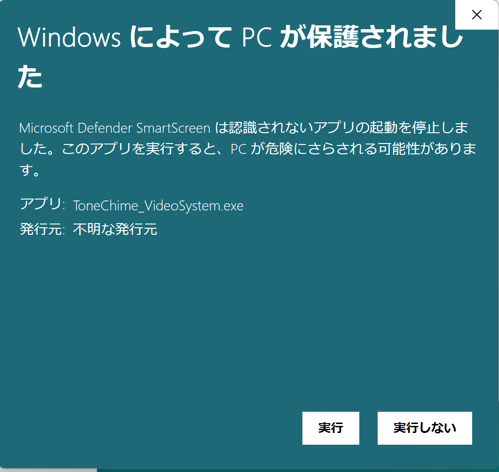

Troubleshooting
Application launch is blocked
On both Windows and macOS, when you first launch an application after downloading it, the security system may block its
startup.

On Windows, if you are not connected to the internet, you will see a dialog saying "SmartScreen can't be run right now".
In this case, click "Run" to start the application.

If you are connected to the internet, you will see a dialog saying "Windows protected your PC", but if you click on "
More info", a "Run" button will appear, allowing you to start the application.

On macOS, instead of double-clicking the application file in Finder or on the desktop, right-click and select "Open"
from the menu. This method will make an option to launch the application appear in the dialog.
On both Windows and macOS, once you have launched the application once, you can start it normally like any other
application afterwards.
Audio application doesn't start
Please check if Max is installed correctly.
No sound response in the audio application
- Click "Audio Settings" in the application and check if the "INPUT DEVICES" in the menu of the window that appears
shows the name of the audio interface you are using. - Check if the "DSP" button is lit up green. If not, click it to start DSP.
- Make sure the pitch of the tone chime you are using matches the note name on the "Pitch" dial in the application.
Sound information is not reflected in the lighting
First, check if the brightness of the lights changes when you drag the Light Brightness slider in the audio application.
The brightness changes with the slider
The connection to the lighting equipment itself is not a problem. After confirming that "Output" in the "Range" section
of the audio application is set to 255, try setting "Input" to a small value like 0.07 and see if there is a response.
The brightness does not change even with the slider
There is a problem with the lighting equipment connection.
- Check if the LED next to the USB connector on the DMX USB PRO lights up when you move the slider. If there is no
response, the audio program is not recognizing the DMX USB PRO. Check if there are any other USB devices connected. - Check if the LEDs on the dimmer side with numbers 1, 2, 3, 4 are lit. If not, either the DMX cable connection is not
made or the channel settings are incorrect. - If the dimmer side is receiving the signal but not lighting up, there might be a problem with the light itself. Check
if you are using incandescent bulbs and if the power to the light fixture itself is on.
The brightness of the lights is either completely off or on at maximum brightness.
If the slider turns off the lights when it is set to 0 and turns on the lights at maximum brightness when it is set to 1 or higher, the dimmer may be set to switch mode.
In the case of the DP-415R, when the “MENU” button is pressed several times, it is correct if it is labeled as C1-d, C2-d, C3-d, or C4-d. If it looks like C1-S, then you are in a switch mode that only switches on/off, so use the ▲ ▼ buttons to switch it to d. (See DP-415R Manual p13.)
Two or more lights react at the same time.
The dimmer may be set to a mode where one DMX signal channel controls multiple outlets.
In the case of the DP-415R, press the “MENU” button several times to see if the display shows CH:04. If it is CH:01 or CH:02, use the ▲ and ▼ buttons to switch to 04.
(See DP-415R Manual p12.)
Sound information is not reflected in the video
Check the following in the "Device Communication" of the audio application:
- Is the
LOCAL_MODEbutton yellow? If not, click it. - Check if the "port" number in the bottom right matches the port number in the video application.
- By default, the communication port is set to 8888, but it may be conflicting with other applications. Try a few arbitrary numbers after 8000.
- The OS firewall settings may prevent proper communication between applications.
- If necessary, temporarily turn off the firewall settings. (Note that this poses a security risk if you are connected to the internet.)
Reponses of lights and visuals are delayed from playing (Latency Problem)
Try reducing the value of IO VECTOR SIZE & SIGNAL VECTOR SIZE in the Audio Setting Menu. 64 is the recommended value for both. (Be careful the shorter buffer size uses more CPU resources.)
Warning
SIGNAL VECTOR SIZE can only be the same or larger size to IO VECTOR SIZE. Also, on Windows, IO VECTOR SIZE may take only a unique value set by a device driver configuration. Please refer to each audio interface's help manual to set it. For instance of MOTU Ultralite Mk5, open CueMix 5 Application, and choose the value on "Buffer Size" in "DEVICE" Menu.